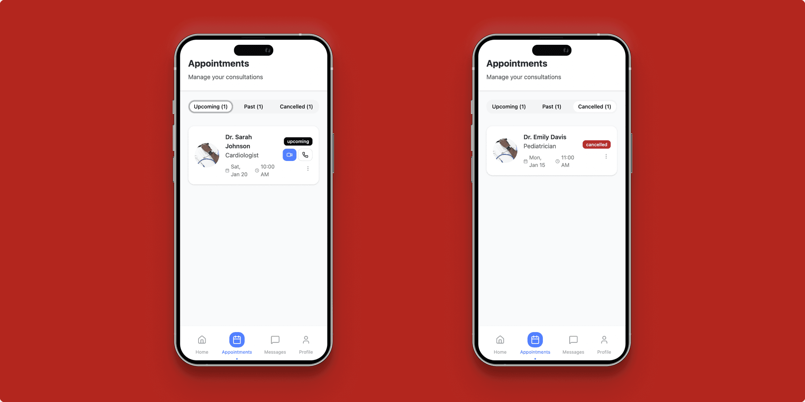
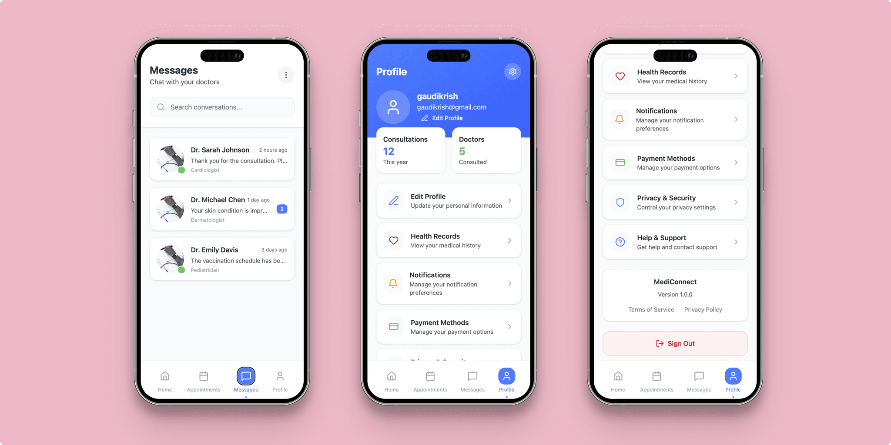

To create a simple, accessible, and trustworthy mobile app enabling older adults to find, book, and consult with doctors remotely through video calls and chat. The app addresses usability challenges faced by seniors and middle-aged users while leveraging digital healthcare trends in Northern Ireland.


Problem Statement
Accessing timely and convenient healthcare is a challenge for many older adults across Northern Ireland, especially those with mobility or transport limitations, or living in rural areas with limited clinic access. While digital health services are growing, many apps are not optimized for the usability needs of older adults, such as simple navigation, clear text, and low cognitive load. MediConnect aims to bridge this gap by offering a seamless, accessible mobile app for booking doctor consultations and video appointments tailored specifically for this demographic.
User Personas
- Mary, 67
Retired, lives in rural County Antrim, moderate tech user, managing multiple chronic conditions.
Needs: Easy app navigation, large text, appointment reminders, accessible video calls. - John, 55
Works full-time, caring for elderly parents, limited free time.
Needs: Quick doctor search, simple booking, reliable video consults, secure prescription sharing. - Eileen, 72
Lives alone in Belfast, moderate digital literacy, prefers in-home care consultations.
Needs: Simple chat and video options, personalized doctor recommendations, voice assistance.
Regional Context: Northern Ireland
- Increasing adoption of digital health, yet broadband in rural areas lags, requiring offline-friendly features.
- Growing government initiatives (e.g., My Care patient portal) supporting digital records and patient empowerment.
- Aging population with increasing chronic health conditions needing accessible telehealth options.
Competitive Analysis
- Doctor Care Anywhere (UK)
Strengths: Strong NHS partnerships, 24/7 GP services.
Weaknesses: Interface focused on younger adults, complex UI.
Opportunities: Simplify UI for seniors, focus on Northern Ireland region. - WebDoctor Ireland
Strengths: Easy video consults, good service coverage.
Weaknesses: Few senior-friendly features.
Opportunities: Add accessibility features, appointment reminders. - Vesta Elder Care
Strengths: Home visits, specialized elderly care, simple app.
Weaknesses: Limited to certain medical specialties.
Opportunities: Combine virtual and in-home consults with personalized UX. - Babylon Health
Strengths: AI triage, diagnostic tools.
Weaknesses: Overwhelming for less tech-savvy users.
Opportunities: Focused usability for older adults, minimal cognitive load.
Key Features for Older Adults
- Large, readable text and buttons with high-contrast colors
- Simple onboarding with voice and illustrative guides
- Easy doctor search with clear filters (location, specialty, availability)
- One-tap appointment booking and calendar integration
- Video consultation with large call controls and optional floating patient video
- Consultation summaries with clear medication/prescription info
- Push notifications and SMS reminders for appointments
UX/UI Highlights
- White background with navy blue, soft blue accents for clarity and calmness
- Rounded cards and buttons to create a friendly feel
- Bottom navigation bar with four icons: Home, Appointments, Messages, Profile
- Clear icons supplemented with text labels
- Micro-interactions: button ripple effects, smooth swipe transitions
- Horizontal carousel for appointment date selection with snap-to-center
- Slide-up filter drawer for specialization/location filters
- Accessible color contrast and large tap areas for all major actions
Interaction and Animation Summary
- Onboarding slides use horizontal swipe with fade transitions
- Doctor cards scale gently on scroll to draw attention
- Booking confirmation modal with checkmark animation and confetti burst
- Video call screen includes pulse animation while connecting and draggable video window
- End-of-call fades smoothly into consultation summary screen
Impact & Benefits
- MediConnect addresses accessibility challenges older adults face with digital health apps.
- Enables timely healthcare access without travel, especially beneficial in rural Northern Ireland.
- Builds trust through clear information, reminders, and simple navigation.
- Supports caregivers like John who coordinate care for aging family members.